TUTORIAL GUIDE
TL / SM / OIC
Data Integration and Visualization Solution
Version 1.0
Bengaluru, Karnataka 560093.
Role Access
TL / SM / OIC access is limited to assigned projects and related activities. This role group can edit and manage assigned project content where permitted, but cannot create projects or delete uploaded files/records.
Guide scope: This tutorial includes only the workflows applicable to this role/group. Features outside the assigned access are intentionally omitted or marked as permission-based.
1. Accessing the Application
- Open the application in a supported web browser.
- Enter your registered email address.
- Enter your password.
- Click Login.
- After successful authentication, the system opens the dashboard permitted for your role.
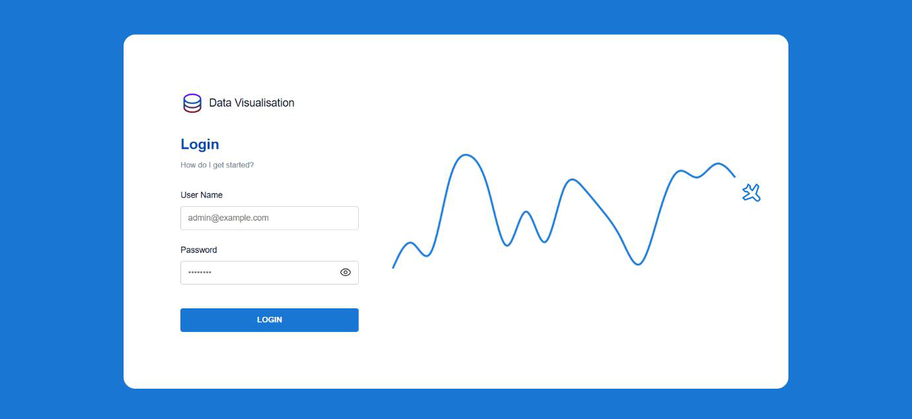
2. Assigned Project Dashboard
The dashboard shows projects assigned to the logged-in user. Use View Project to open the required project.
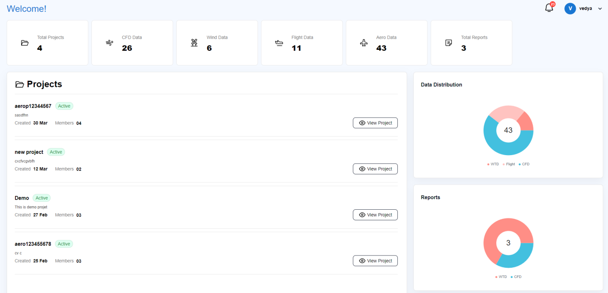
3. Open Assigned Project
- Locate the assigned project in the Projects list.
- Click View Project.
- The Project Overview workspace opens with the modules available for that assignment.
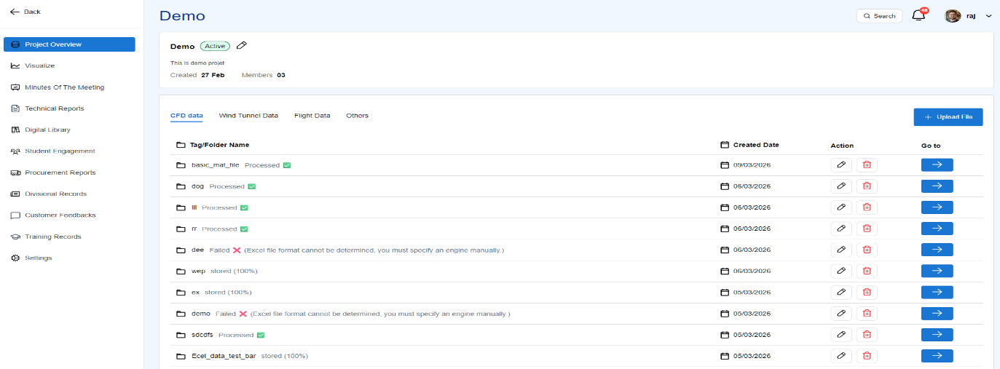
4. Notifications
- Click the notification bell at the top-right of the application.
- Review the notification message and timestamp.
- Open or acknowledge the notification when an action is required.
- Use Mark all as read when appropriate.

5. Edit Assigned Project / Members
- Open the assigned project.
- Click the Edit Project button to update the permitted project details.
- Use Project Members to manage members only for the assigned project.
- Save the changes.
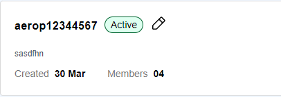
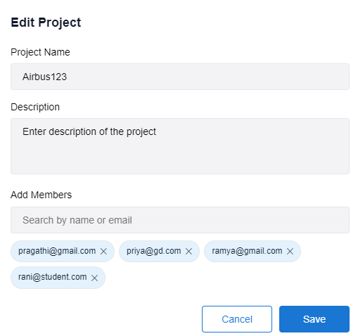
Assigned Project Members
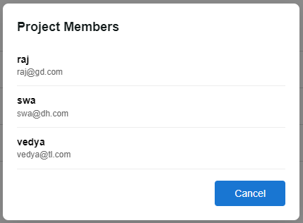
6. Minutes of Meeting
The Minutes of Meeting module stores meeting documents and tracks associated action items.
- Technology Council (TCM)
- PMRC
- Executive Board Meeting
- Group Director Meeting
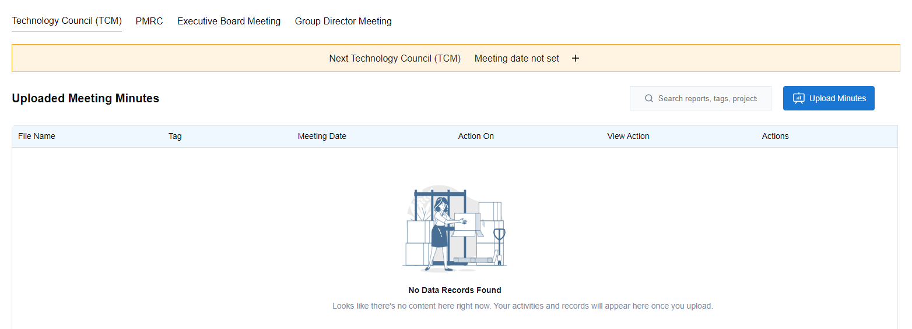
Add New Meeting
Users can schedule the next meeting for their assigned project from the Minutes of Meeting page.
Steps
- Open Minutes of the Meeting from the left navigation menu.
- Select the required meeting category, such as TCM, PMRC, Executive Board Meeting, or Group Director Meeting.
- Click the + icon displayed beside the next meeting information.
- The Add Next Meeting window will open.
- Review or enter the Meeting Title.
- Select the required Meeting Date.
- Select the Meeting Time.
- Click Add Meeting to save the meeting schedule.
- The scheduled meeting date and time will be displayed on the Minutes of Meeting page.
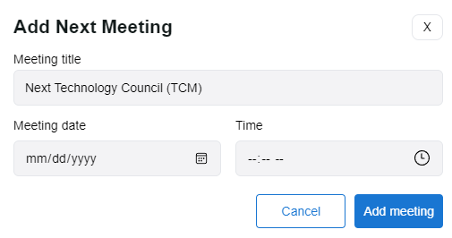
Upload Meeting Minutes and Assign Actions
- Click Upload Minutes.
- Browse and select a PDF or Word file.
- Enter Action Points.
- Assign action owners.
- Select the Meeting Date.
- Enter a Tag Name.
- Click Upload MOM.
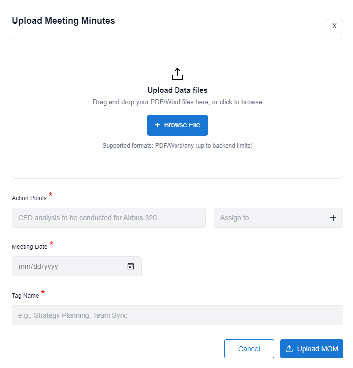
7. Project Workspace and Dataset Management
Open an assigned/available project to access its datasets and project-specific modules.
Project Overview Workspace

Upload Files

Clicking the Upload File button opens the upload files modal.
The upload modal allows users to:
- Browse and select plot files.
- Preview selected files (if supported).
- Enter a Folder / Tag Name.
- Select Data Type (e.g., CFD).
- Upload selected files.
Upload Modal Modes
The upload modal operates in two modes:
Create Mode
- Upload files under a new tag.
- A new folder/tag is created for the selected dataset.
Edit Mode
- Rename an existing tag.
- Upload additional files to an existing tag.
- The existing Data Type remains fixed and cannot be changed.
File Selection
- Click Browse Plot Files.
- Select one or more files from the system.
- Multiple files can be selected at the same time.
- After selection, the system displays:
- File Name
- File Type
- File Size
- Visualization eligibility, where applicable
Supported File Types
File behavior depends on the format:
- CSV / Excel / TXT / DAT / C / FIN / KUL / ODS / FUL files
- Preview supported.
- Can be used for visualization.
- Images, Word and PDF file formats
- Stored as raw files only.
- Images can be previewed.
- Word and PDF files cannot be previewed.
- MAT files
- Preview not supported in the upload modal.
- Visualization supported.
Folder / Tag Name and Data Type
- The user enters a Folder / Tag Name, which groups the uploaded files.
- The user selects a Data Type (CFD, Wind Data, Flight Data, Others).
- In edit mode, the data type is fixed and cannot be changed.
Configure Plot File Headers
Once a tabular file is selected, the Plot File Header option appears.
Users can choose how headers are handled:
- Use headers from file - The system reads the first row as column headers.
- File has no headers - The system automatically generates column names such as column1, column2, etc.
- Provide custom headers - User manually enters comma-separated headers.
When Provide custom headers is selected:
- Enter the required headers in comma-separated format.
- To apply the same headers to multiple selected files, select Apply custom headers to all files.
- Continue with the file upload after verifying the header configuration.
| Access Area | Access for This Role |
|---|---|
| CSV / Excel / TXT / DAT / C / FIN / KUL / ODS / FUL | Preview supported; can be used for visualization. |
| Images | Image preview supported; stored as raw files. |
| Word / PDF | Stored as raw files; preview not supported. |
| MAT | Dedicated MAT handling; visualization supported. |
File-specific Preview
- Excel: all sheets are listed. Switch between sheets and use the toggle to select sheets for visualization.

- Image files: a visual preview of the image is displayed.
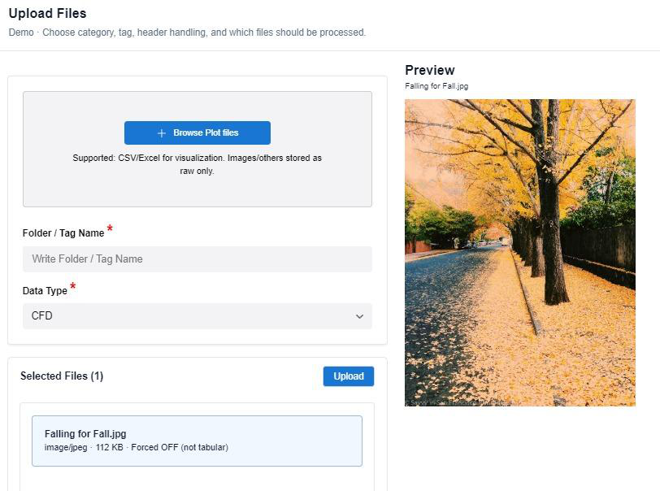
DAT / C Text Files
- The preview displays the file line-by-line with line numbers.
- Total line count is shown.
- The user can select start line and end line.
- Only the selected range is parsed, used for data extraction, and used for plotting graphs.
- Selected range is visually highlighted.
- The system auto-detects headers from the first selected line.
- The parsed data range is also shown as a table preview.
- Apply line range to multiple files
- For .Dat and .C files, users can enable Apply range to all .Dat /.c files.
- This applies the same start and end line selection to all similar files, ensuring consistency and reducing manual effort.
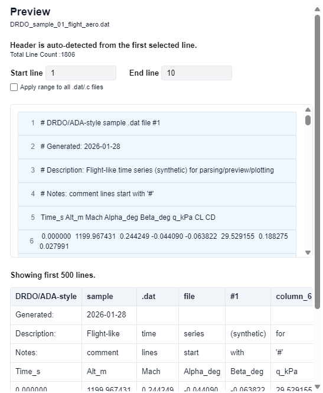
MAT (MATLAB) Files
- The preview displays all variables available in the .mat file along with their dimensions and data types.
- When a variable is selected, its data is shown in a tabular format.
- Users can define a slice range to load only a specific portion of the data.
- After clicking Apply, only the selected slice is displayed and processed.
- The selected data is prepared for further parsing and visualization.
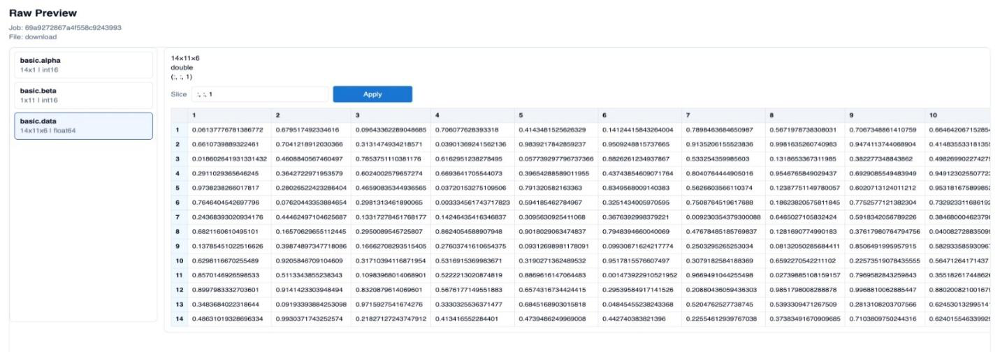
Stored Files and Preview
- Click Go To for the required tag/folder.
- The Stored Files page displays files under that tag.
- Open a supported file to view Raw Preview or Processed Preview.
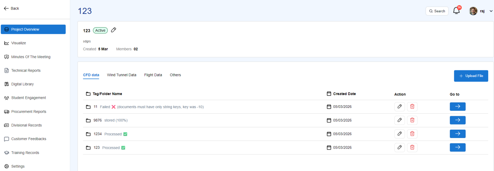
When the user clicks the Go To button in Figure 1, the system navigates to the Stored Files page shown in Figure 2.
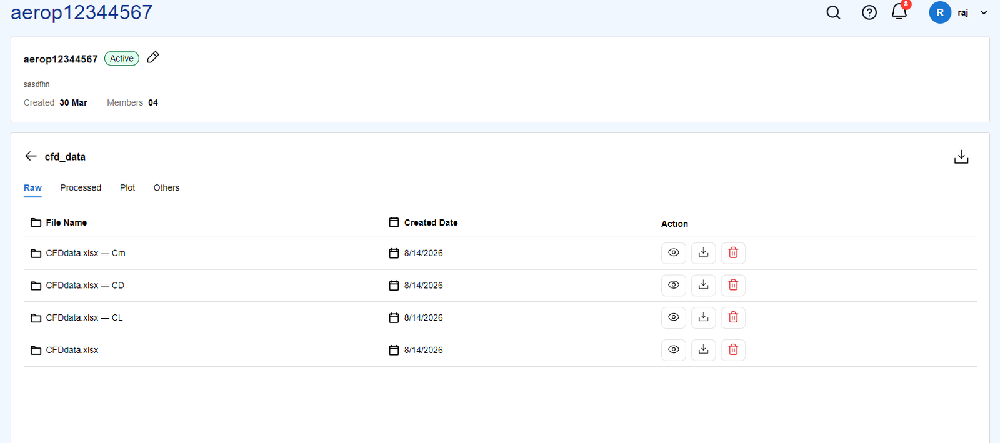
Raw Preview
The Raw Preview page displays the data exactly as it was uploaded, without any changes.

Processed Preview
Processed Preview displays parsed data prepared for plotting. You can edit column headers and must click Save to save the changes.
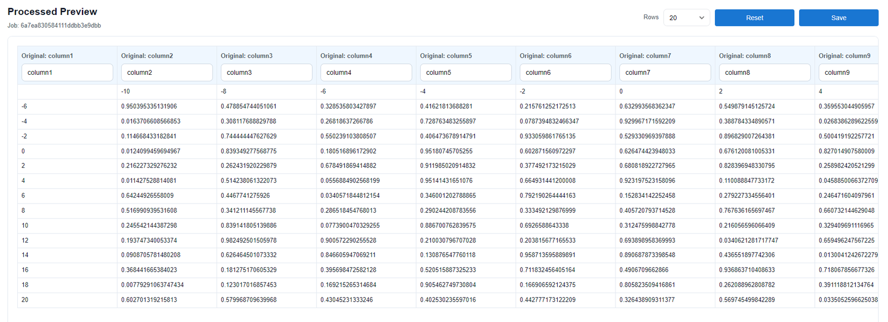
Global Search
- Click Global Search at the top-right of Project Overview.
- Search sections, tags, files, or visualizations.
- Select a result to navigate directly to the corresponding project area.
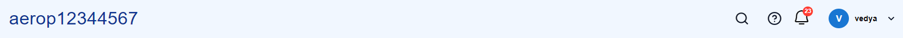

8. Visualization
Generate a Plot
- Open Visualize from the left navigation menu.
- Select Data Project, Dataset, Tag, and File.
- Select Plot Type and Chart Type.
- Select X Scale and Y Scale.
- Assign X-axis and Y-axis; assign Z-axis when required.
- Optionally enter a Plot Name.
- Click Generate Plot.
- Review the interactive preview and save/manage the visualization as required.
X-axis and Y-axis are required for all plots. Z-axis is required for Contour and 3D plots.
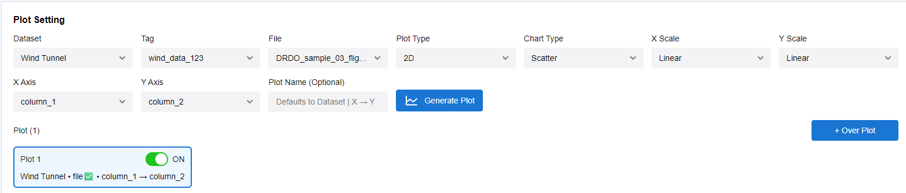

Cross Plotting / Data Browser
- Select Dataset, Tag, and File.
- When users click the eye icon next to the X-axis or Y-axis field, a Data Browser window is opened.
- Scroll through row numbers, column names, and values.
- Hover over a column header or row number to display selection checkboxes.
- Select multiple columns or rows if required.
- Use Add Selected Columns as Y or the axis dropdowns.
- Use Deselect All to clear the selection.
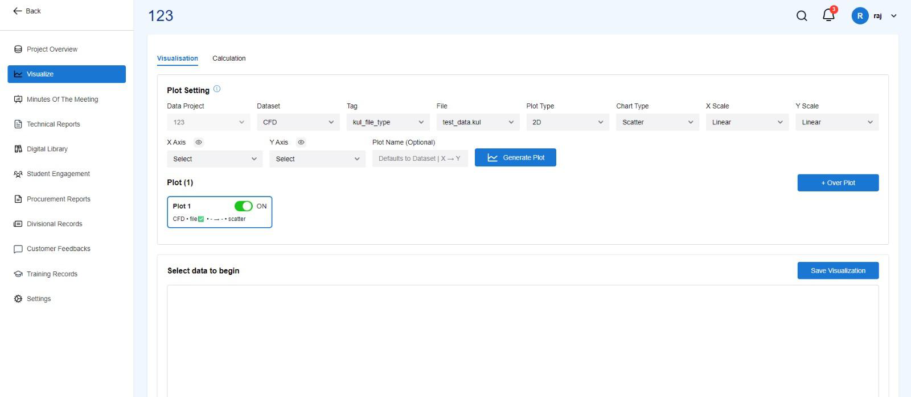
Axis Scale Configuration
- X = Log, Y = Linear → Semi-log
- X = Linear, Y = Log → Semi-log
- X = Log, Y = Log → Log-log
- X = Linear, Y = Linear → Linear
Semi-log is produced when only one axis is logarithmic; it is not a separate scale option.
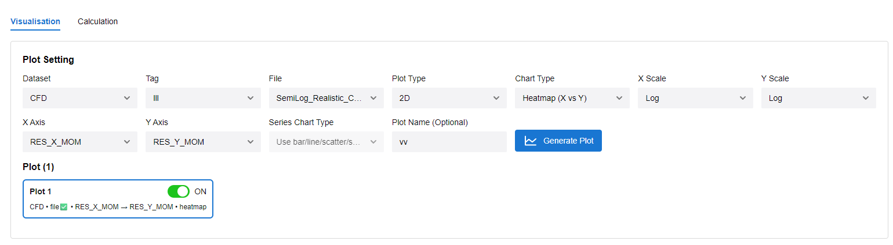
MAT File Visualization
- Select the Dataset, MAT tag, and required .mat file.
- Choose the MAT Chart Type and plot signature.
- Select the required X and Y variables.
- Apply slice values when only part of a large array is required.
- Click Generate Plot.
- Review and save the visualization if required.
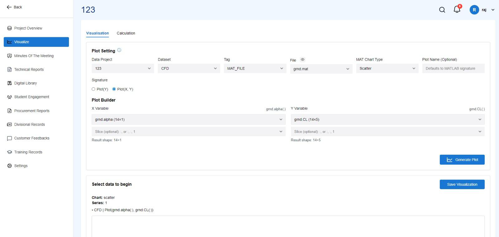
Create Multiple Plots (Over-plot)
- Generate the first plot.
- Click + Over Plot button.
- Select another column, file, or dataset.
- Configure its plot type, axes, and scales.
- Click Generate Plot again to generate the additional plot.
- Use the ON/OFF toggle to show or hide individual series.
- Remove a series when it is no longer required.

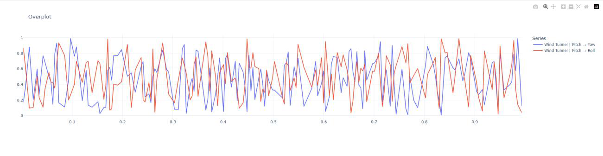
9. Calculation Module
- Select the required Data Project.
- Select the Dataset.
- Select the required Tag.
- Select the File.
- Enter a name for the Derived Column.
- Enter the mathematical Formula.
- Map formula variables to the corresponding dataset columns.
- Review the Formula Preview.
- Click Process Formula button.
- Verify calculated values in Preview.
- Click Save Derived Column.
- Use the saved derived column for further analysis or visualization.
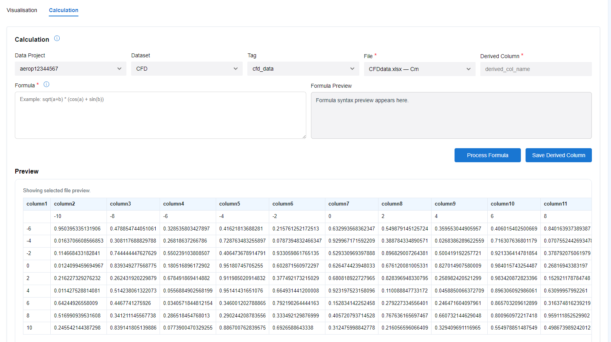
10. Aircraft Performance Module
The Aircraft Performance Module uses available aircraft performance data to analyze operational limits, climb performance, aerodynamic characteristics, and maneuvering behavior under different flight conditions.


11. Technical & Design Reports
Open Technical & Design Reports to access project technical, design, and other reports.
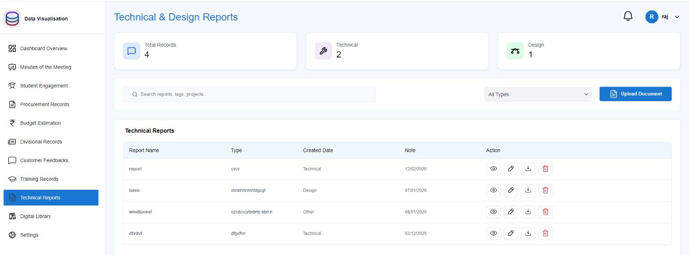
- Use search or Type filters to locate records.
- Click Upload Document when permitted.
- Upload a PDF/Word document.
- Enter Report Name, Report Type, Created Date, and Note.
- Click Upload.
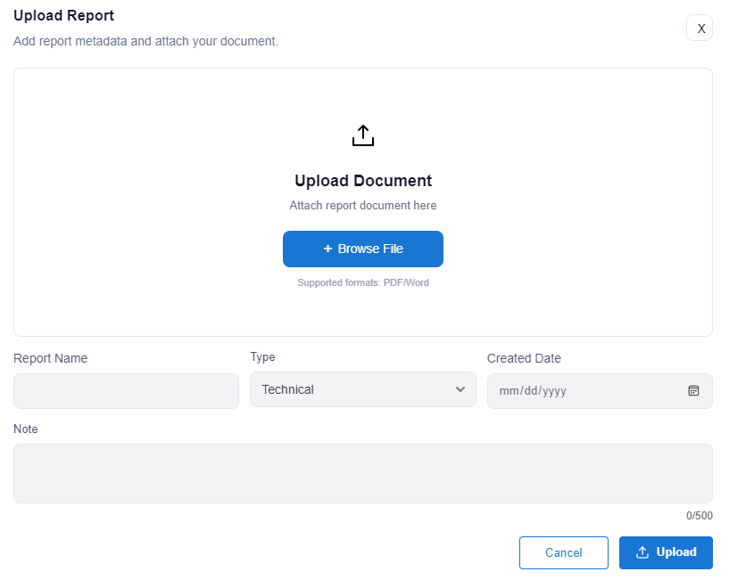
12. Digital Library
- Open Digital Library from the left navigation menu.
- Search by file name, tags, or keywords; filter by Type or sort when required.
- Click Upload File when permitted.
- Select a PDF/Word document.
- Click Upload.
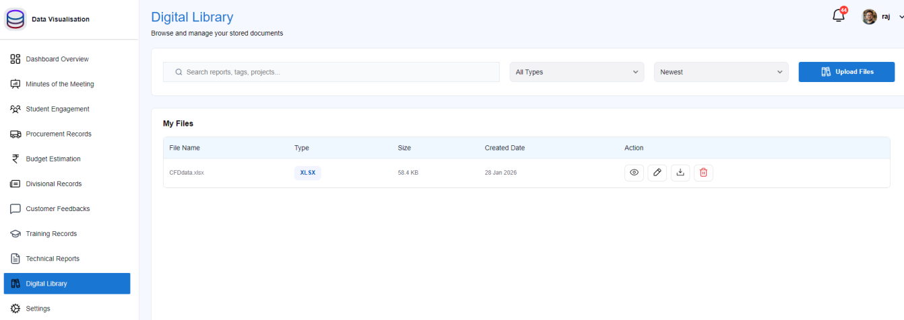
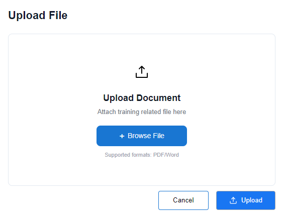
13. Procurement / Budget / Training and Related Records
TL / SM / OIC can access Procurement, Budget, Training, and similar modules for the assigned project where that access is enabled.
- Open the required module from the assigned project.
- View or add/update records within assigned project permissions.
- Do not delete records; delete access is not provided for this role group.
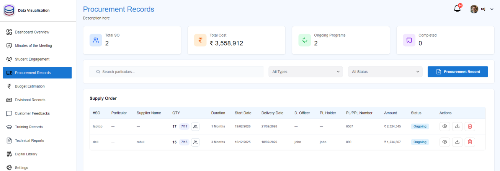
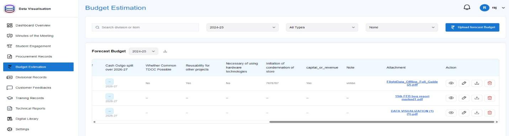
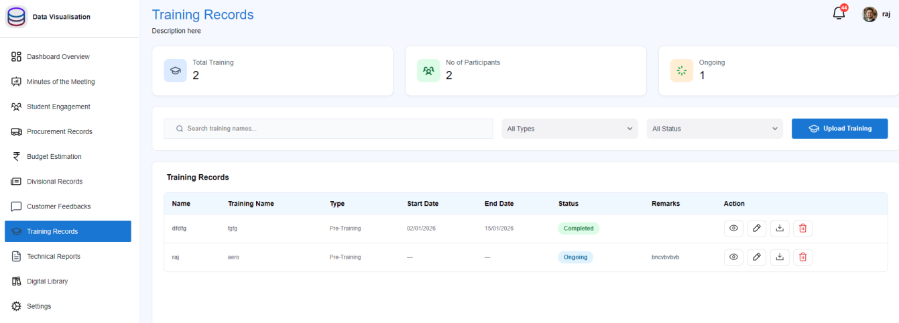
14. Settings / Own Password
- Open Settings from the left navigation menu.
- Enter the Current Password.
- Enter a New Password.
- Re-enter the New Password.
- Click Save Password.
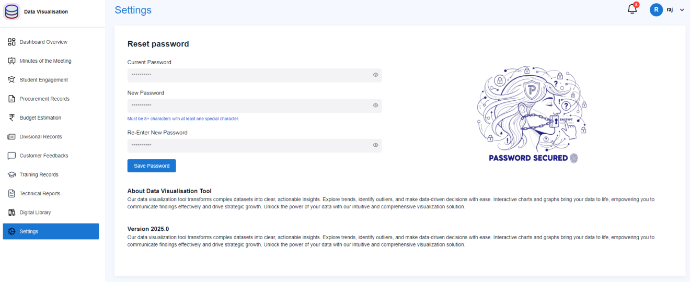
Restrictions for TL / SM / OIC
- Cannot create projects.
- Cannot delete uploaded files.
- Cannot delete records.
- All operational access is limited to assigned projects and permitted modules.
End of tutorial guide.